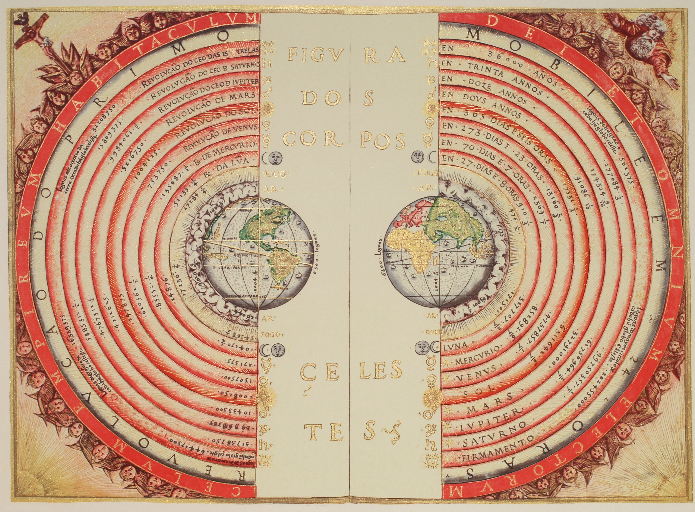
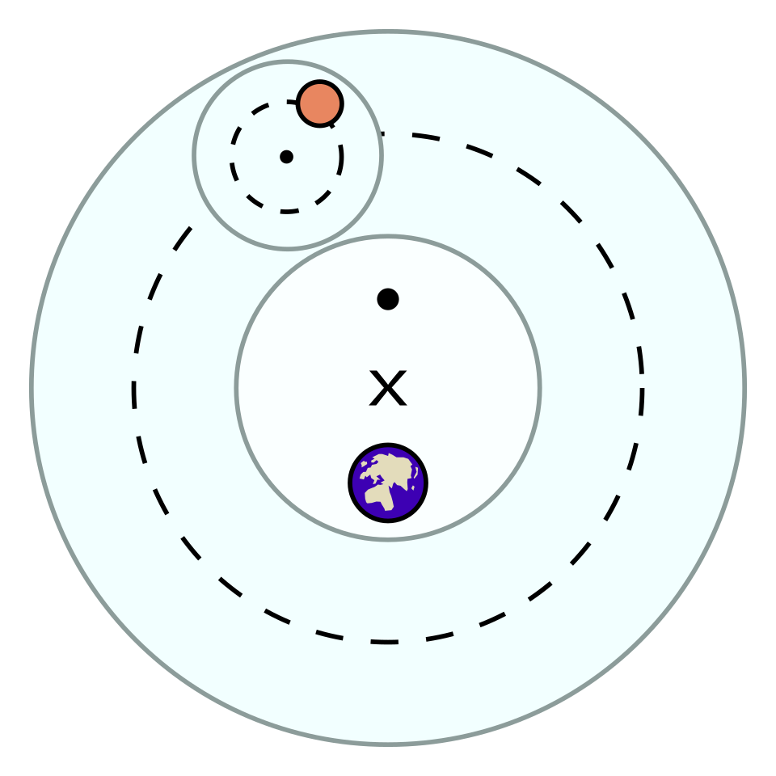
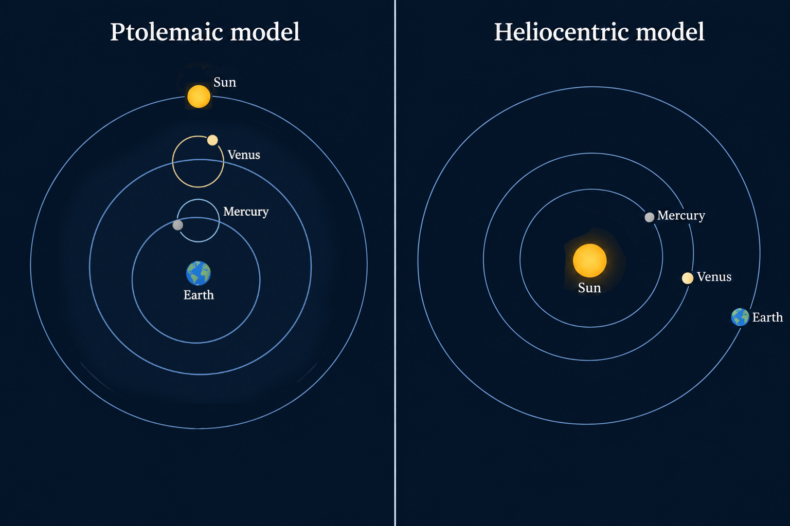

Before the scientific revolution even the most educated people in the world believed that the planets revolve around the earth and not the sun. This fact often gets used to illustrate how centuries of smart people can be radically wrong without having a hint of anything being wrong; the subsequent turn to thinking the sun is at the centre of the solar system is also the most common example of a so called paradigm-shift or scientific revolution. But I don't subscribe to either of these stances. Of course current scientific model is a better representation of reality; I'm not disputing that. What I am disputing is that people in the past were radically wrong, because in reality their model of the solar system was almost right and I have the reasons to show you why.
In this article, I will focus on the ptolemaic model of the solar system, the one developed by ancient Greek astronomers and finalized by Ptolemy in the 2nd century CE. After all, this model is the most familiar to myself and others, so I'm not focusing on it to suggest that other cultures couldn't have come up with other almost true theories.

The ptolemaic model postulated that the sun, the moon and the five planets visible to the naked eye revolved around the earth in predominantly circular orbits. In addition to this main circular orbit each celestial object also had an epicycle, a smaller orbit giving the planet a little bit of a wobble and making it deviate from the main circular orbit. You can imagine the main orbit like a ferris wheel with the earth at its centre and a single wagon, you can then imagine the epicycle as a large clock inside this little wagon of the ferris wheel with the planet attached to the tip of the pointer in the clock. Now, the Greeks didn't postulate a giant ferris wheel or clocks floating in space, but this is an easy way to visualize what is happening according to this model. And each planet of course needs its own ferris wheel with its own clock, as some are further away and move slower and some are closer to the earth moving faster. Also the main orbit of some of the planets wouldn't have been centered exactly on the earth, but on a point somewhat close to the earth.
How can we asses if this model is any good? Well, we could look at the 5 planets visible to the naked eye and measure the exact position they have in the sky. Then we use the ptolemaic model to calculate, where we expect to find the planets at some point in the future and then we wait until then and see if our predictions are accurate and if not, how far of the mark they are. Let's do this extrapolation half a year into the future, that is enough time for the planets to move considerably, but doesn't mean we have to wait for our grandchildren to grow up.
In this test the ptolemaic model stacks up astonishingly well, most planets will be predicted correctly within about one degree, which is the size of your outstretched thumb. Unless you literally put a ruler to your window and mark the precise position we calculate, you wouldn't even notice any difference at all. Out of all planets mercury performs by far the worst, but even in the worst case scenario it will only be of by about 5°; that difference could be noticed with keen observations even without measuring, but it is still in the right ball park. And considering that these people had no telescopes and were just looking into the sky with their bare eyes, it is quite astonishing that we reached these levels of accuracy.
The critics might use this opportunity to jump in and say: „ok, the ptolemaic model might be good at predicting the apparent position in the sky of the planets, but in terms of the geometry of the solar system it is totally wrong“. This is a valid point as it gets to a real distinction: it is one thing to predict in which direction a planet is located (the apparent position in the sky), but it is a totally different thing to actually know the precise distances and positions in three dimensional space of each of the planets (the actual geometry).
But even in terms of geometry Ptolemy is not entirely wrong. One thing the ptolemaic model gets right is that Mercury and Venus always appear in the part of the sky closer to the sun. In our modern heliocentric model this is elegantly explained by the fact that they are closer to the sun than we are. In the ptolemaic model this observations gets captured by the fact that their orbits are locked together. If you think back to the ferris wheel analogy, it's as if the wagons for Mercury and Venus are always locked into the straight line connecting the sun to the earth. The only thing that differs between sun, Mercury and Venus is their distance from the earth and their epicycle. That picture is indeed not that far off from the idea that Mercury and Venus orbit the sun.

In fact this kind of set up is so close to heliocentrism that even in antiquity Martianus Capella proposed a model, in which Venus and Mercury orbit the sun, which in turn orbits the earth, that is their wagons are the same and Venus and Mercury just have bigger clocks.
So Ptolemy had a nice description of the geometry of the inner planets, but the outer most planets weren't all that bad either. Take Saturn, it is about 10 times further removed from the sun, than the earth is, so saying it revolves around the earth is not that far off. When Saturn were to revolve around the earth in a circle (ignoring the epicycle for now), then it's distance to the earth would be constant. In reality, the distance to Saturn does vary, but only by at most by about 10%, the average error is about 6%. This is because Saturn is so far out in the solar system that the distance between sun and earth becomes small by comparison and thus it makes little difference whether we say: „Saturn orbits the sun“ or „Saturn orbits the earth“. And if the ancient Greeks knew about the outer planets, they would have been even more correct in saying that they orbit the earth [1].
Considering this, is it even wrong to say that the outer planets circle around the earth? When I say that a vulture is circling above us, I'm not saying „the vulture is moving on an ideal circle, whose precise centre is located directly above us“. I'm saying: „the vulture is taking some round maybe wobbly path not terribly far from a circle, which encompasses the place where we stand“. In that sense it is no metaphor at all to say that the outer planets circle the earth, since they do take a round path encompassing the orbit of the earth.
Recapping a bit, we have seen that the ptolemaic model isn't bad at making predictions and it's description of geometry, while being notably worse, is still right in significant ways. But aren't we missing the elephant in the room? The big difference between the ptolemaic model and modern astronomy is that for Ptolemy the earth was in the centre and for us the sun is in the centre. In that regard Ptolemy was completely and utterly wrong, right?
Well, the sun is in the centre of what exactly? Is it the centre of the universe? Not really, since the universe is presumed to be infinite by modern astronomy, there is no meaningful sense in which any point is more central than any other point; even if the universe was finite, there is no reason to presume our sun is special among the billions and billions of stars. Is it the centre of the solar system, then? Yes, the sun is the centre of the solar system with all the planets orbiting around the sun. But as discussed earlier, the earth is also nearly in the centre of the solar system with the planets further away than Saturn only deviating less than 10% from an orbit centered on the earth [2].
Ok, but you have to concede that the earth orbits the sun instead of vice versa, the earth isn't standing still; „it keeps on moving“ as Galileo supposedly said. And that's a fact, it is proven by modern astronomy! It's not. In modern physics we have a concept called relativity of motion: you can say that a train is moving relative to the surface of the earth or you can say that the earth is moving relative to the train, both are equivalent descriptions of the same thing happening. There's no reason to call one description right and the other wrong. So too in astronomy there's nothing stopping you from saying that the earth is standing still and everything is moving around the earth, you would have to take into account that the earth is a non-inertial reference frame, but there's absolutely nothing stopping you from making a description of the world, where all motion is measured relative to the earth, which is presumed to stand still.
Some people might say that the last move I've made is contrived; it is surely better to work in the inertial reference frame of the sun than to work in the non-inertial reference frame of the earth, which is spinning at 400 metres a second and orbiting the sun at 30 kilometres a second. But in fact, we are using the earth as a still standing point of reference all the time, just ask yourself, which way is down? [3] Down is a concept entirely relative to the earth, it is the direction in which gravity pulls you. So every time you are saying that anything is down or up (pretty much any day that is), you are using the earth as a reference frame. And there's no reason to reject a concept that is so extremely useful, very easy to understand, and which has no vagueness at all in its definition.
The overzealous proponents of heliocentrism however are very quick to randomly assert that statements involving the concept of down, are misguided or metaphorical or even outright false. There is no example more common than people talking about sunrise as a metaphor. They say that sunrise presupposes a geocentric model, and therefore speaking of sunrise is just a metaphor, as geocentrism has been disproven by science.
But if you actually think about how we define down, there is no need to call sunrise a metaphor. When you ask me in the deepest parts of the night, where the sun is, I would point right into the ground, that is literally where the sun is, somewhere down hiding beneath the earth. What's even more clear is when we wait until noon and see the sun being above us in the most literal sense of the term you can imagine. Between these two points in time the sun went up relative to us, which is the same as to say: „the sun has been rising“.
That we treat the earth as a central reference point for movement isn't a mistake, it's not a „primitive“ old-fangled prejudice, it's the most natural thing to do and it can be just as rigorous as any other reference point, while obviously being much easier and more useful than other frames of reference. We need not say that „up“ and „down“ are metaphors, when they are used in precisely the way they have always been defined in.
All this means that the so called „revolution“ in astronomy isn't much of a revolution at all. Sure, the jump from a ptolemaic to a copernican model resulted in a medium increase in geometric accuracy, but at the same time it was just a minor increase in observational predictive power. And in terms of everything else, the supposedly grand philosophical implications about the earth being knocked from the centre, the copernican revolution was no revolution at all, since it is just a change in perspective that doesn't change the underlying physical reality, you can still treat the earth as standing still in the centre of the universe, in fact you should, for it is very intuitive and much easier to use.